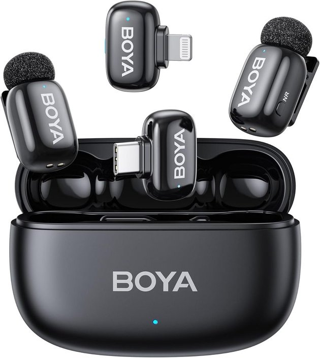
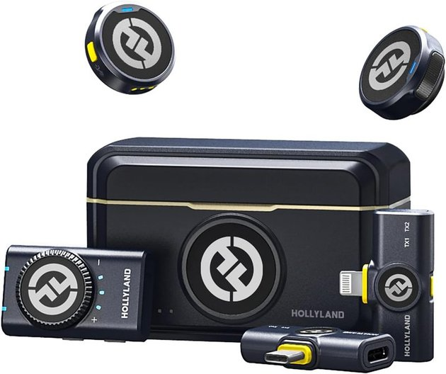
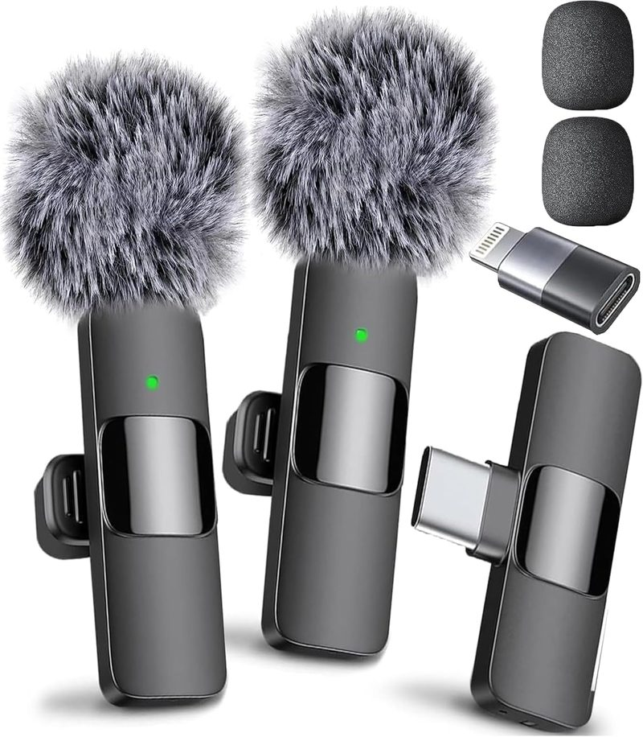
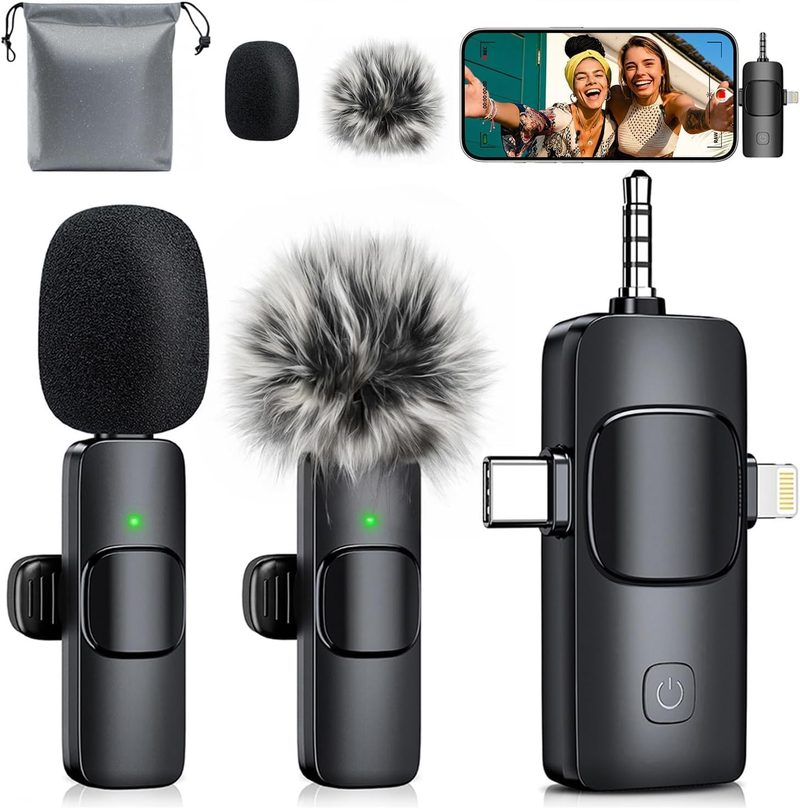
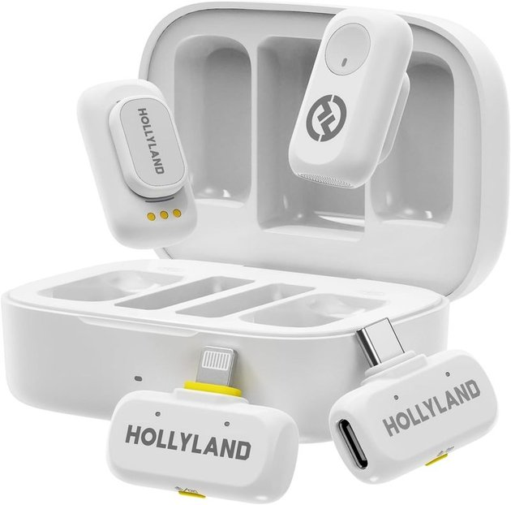

5 Best Wireless Lavalier Mics Under $100 for Mobile Creators (2026)
Last updated: August 24, 2026 · Research-based guide · techpicksio.com
Buy the BOYA Mini 2. At roughly $40–50 it does the only thing that actually matters here — clean, noise-cancelled 24-bit dialogue — for about a third of what the Rode Wireless Micro costs. If you're a solo creator talking to your own phone, spending more than this buys you features you will not use. Buy the Hollyland Lark M2 instead if you record two people at once: 40 hours of battery and 300m of range is the version of this purchase that survives real interview work.
How we pick: published manufacturer specifications and aggregated user reviews — not hands-on testing.

BOYA Mini 2
The one to buy if you're a solo creator talking to your own phone. Fixing your audio is the single biggest quality jump available for $50 — make it the next thing you buy.
- Audio
- 24-bit/48kHz
- Battery
- ~30h w/ case
- Transmitter
- 5g, AI noise cut
Top Wireless Lav Mics Under $100 Compared
| Model | Audio | Total Battery | Range | Action |
|---|---|---|---|---|
| BOYA Mini 2 | 24-bit/48kHz | ~30h (w/ case) | 100m | Check Live Price |
| Hollyland Lark M2 | 24-bit/48kHz | ~40h (w/ case) | 300m | Check Live Price |
| Mini Mic Pro | Digital 2.4GHz | ~6h (TX only) | 260m | Check Live Price |
| MENERESAS 3-in-1 | 2.4GHz digital | ~15h (receiver) | 80ft (~24m) | Check Live Price |
| Hollyland Lark A1 | 24-bit/48kHz | 120dB SPL handling | 200m | Check Live Price |
Specs per manufacturer listings. Prices fluctuate; verify current price on Amazon. All models listed are typically available under $100 for a single-TX kit.
How We Picked These
We filtered specifically for wireless lavalier mics that meet three criteria: priced under $100 for a usable single-transmitter kit, compatible with smartphones via USB-C or Lightning, and reviewed positively enough across user feedback to recommend to a mobile creator who can't afford to re-shoot because of a mic failure. For higher-end options (the Rode Wireless Micro at ~$130 and DJI Mic Mini at ~$170), see our dedicated Rode vs. DJI comparison.
1. BOYA Mini 2 — Best Value
Quick take: Our pick, and the right buy for most solo creators. 24-bit/48kHz with AI noise cancellation is genuinely all the audio quality a phone video needs, and at 5g the transmitter is light enough that it doesn't drag a t-shirt collar out of shape on camera. Skip it if you work beyond ~100m from your phone, or you need to mic two people.
The BOYA Mini 2 is the biggest surprise in the budget wireless mic space. At roughly a third of the price of the Rode Wireless Micro, it delivers AI noise cancellation, 24-bit/48kHz audio, and a total battery life of around 30 hours via its charging case. The 5g transmitter weight is the lightest on this list — light enough that it won't pull down thin shirt collars, which is a real-world advantage reviewers frequently cite. The trade-off is range (100m vs 200-400m for pricier options), but for single-person vlogging where you're always near your phone, that's rarely a limitation.
👍 Why We Picked It
- ✅ Extremely lightweight at 5g per transmitter
- ✅ AI noise cancellation at this price point
- ✅ Built-in foam windshields (no loose accessories)
👎 Where It Falls Short
- ❌ 100m range is shorter than mid-tier options
- ❌ No 3.5mm jack for camera use
Check Live BOYA Mini 2 Price on Amazon
2. Hollyland Lark M2 — Best for Dual-Person Interviews
Quick take: Buy this the moment you're recording two people. Two transmitters plus receivers for USB-C, Lightning and 3.5mm mean you can mic an interview and plug into whatever camera turns up, and 300m of range covers a subject who wanders off-mark. 40 hours of battery takes charging off your pre-shoot checklist entirely. Buy the BOYA instead if you only ever mic yourself — this is more system than you'd use.

The Lark M2 ships with two transmitters and a triple-receiver setup (USB-C, Lightning, and 3.5mm), making it the most versatile option here for creators who switch between phone and camera. At 9g per transmitter and 40 hours of total battery via the charging case, it handles long interview days without recharging. The 300m range and 48kHz/24-bit audio put it in near-professional territory, and the one-click noise cancellation works well in moderately noisy environments according to user reviews.
👍 Why We Picked It
- ✅ 2TX + 3RX combo covers phone and camera
- ✅ 40-hour total battery from charging case
- ✅ 300m range for active outdoor shooting
👎 Where It Falls Short
- ❌ Full combo kit can edge above $100
- ❌ Larger charging case than BOYA's
Check Live Hollyland Lark M2 Price on Amazon
3. Mini Mic Pro — Best Range for the Price
Quick take: Buy this only if distance is genuinely your problem. 260m is the longest range here, so for miking a subject across a field it's the pick. Everything else is a compromise: the ~6h transmitter battery is the shortest in this roundup, so you'll be planning charges around it. Skip it for ordinary talking-head work — you'd be paying for range you never leave.

The Mini Mic Pro stands out for a wireless range (up to 260m) that would normally command a much higher price, using 2.4GHz digital transmission with a near-zero latency codec. It ships with a combined Lightning/USB-C receiver plus swappable windproof covers and sponge heads, so one unit covers both iPhone and Android without buying a separate kit. Battery life sits around 6 hours per charge — shorter than the Hollyland options — but the 2-hour recharge time is fast, and the receiver can power-pass to your phone while recording.
👍 Why We Picked It
- ✅ 260m range, longest on this list
- ✅ Combined Lightning/USB-C receiver in one unit
- ✅ Includes windproof covers and spare sponge heads
👎 Where It Falls Short
- ❌ Shorter ~6h battery life per charge than Hollyland options
- ❌ No dedicated charging case — carry the USB-C cable
Check Live Mini Mic Pro Price on Amazon
4. MENERESAS 3-in-1 — Best for Multi-Device Switching
Quick take: Buy this if you switch devices constantly. One universal receiver covers iPhone, Android and camera with no adapter swapping — the fiddly part of every other system here. Skip it if you shoot outdoors or at any real distance: 80ft (~24m) is by far the shortest range in this roundup, and it's the spec that will bite you first.

The MENERESAS 3-in-1 is built around a single universal receiver that works across iPhone, Android, and camera without swapping adapters — useful if you regularly move between devices mid-project. It's rated for an 80ft (about 24m) range and a 15-hour receiver battery with a 5-hour transmitter runtime, positioning it as a shorter-range but longer-lasting-on-standby option than the Mini Mic Pro. Dual transmitters support two-person recording out of the box.
👍 Why We Picked It
- ✅ Single 3-in-1 receiver for iPhone, Android, and camera
- ✅ Dual transmitters included for two-person recording
- ✅ 15-hour receiver battery life
👎 Where It Falls Short
- ❌ 80ft range is shortest on this list
- ❌ Newer brand with less long-term track record than Hollyland or BOYA
Check Live MENERESAS 3-in-1 Price on Amazon
5. Hollyland Lark A1 — Best Battery Life
Quick take: Buy this if your audio environment is unpredictable. A 120dB SPL rating means a sudden shout, a round of applause, or a passing truck won't distort the take the way it would on cheaper mics, and three-level noise cancellation handles the steadier noise underneath. Skip it if you shoot in controlled quiet — that's headroom a calm room never asks for.

The Lark A1 pairs a 200m range with 48kHz/24-bit studio-grade audio and 3-level intelligent noise cancellation, plus EQ and reverb presets adjustable through Hollyland's app. It handles sudden loud noise well thanks to a 120dB SPL rating, avoiding the distortion cheaper mics can suffer at high volume. The magnetic mounting adds a quick-attach option alongside the standard clip. Reviewers note it's especially good for events and conference recording where consistent range and noise handling matter more than raw battery runtime.
👍 Why We Picked It
- ✅ 200m range with strong anti-interference performance
- ✅ 3-level noise cancellation plus EQ/reverb presets
- ✅ Magnetic mount alongside standard clip
👎 Where It Falls Short
- ❌ App required to access EQ/reverb customization
- ❌ Combo kit with both receivers can approach the $100 ceiling
Check Live Hollyland Lark A1 Price on Amazon
Buyer's Guide: What Actually Decides This Purchase
Three specs separate the budget lavs worth owning from the ones you'll replace. Buy on bit depth first — 24-bit versus 16-bit is audibly cleaner and far more forgiving when you push levels in the edit, and it's non-negotiable at this price now that budget mics offer it. Noise cancellation is second, and it matters more than the spec sheet suggests: budget lavs get used in exactly the noisy rooms where a pricier shotgun mic would otherwise be required. Total battery — transmitter plus case — is third, and it's the one people over-weight; a 6-hour transmitter is fine when the case carries 30+ hours across the day.
So: buy the BOYA Mini 2 unless you record two people, in which case buy the Hollyland Lark M2. Those two cover the overwhelming majority of creators reading this, and the remaining three on this list are each answers to one narrow problem — extreme distance, constant device-switching, or unpredictable noise. If none of those three problems is one you actually have, don't buy the mic that solves it.
If your budget stretches above $100, the Rode Wireless Micro (~$130) and DJI Mic Mini (~$170) are the next step up — both offer meaningfully better audio quality and build, and we compare them in detail in a separate guide.
Frequently Asked Questions
Are wireless lavalier mics under $100 actually good?
The better ones now offer 24-bit/48kHz audio and AI noise cancellation, features that were limited to far more expensive systems a few years ago. They won't match professional broadcast gear, but the improvement over built-in phone audio is dramatic.
What's the difference between 24-bit and 16-bit audio on a mic?
24-bit captures more audio detail and gives you more room to adjust levels in editing without introducing noise. For dialogue-driven content, it's the more forgiving choice, which is why most of the mics in this guide are 24-bit.
How much wireless range do I actually need?
For solo vlogging where the phone is a few feet away, 100m is far more than enough. Longer ranges of 200-300m matter for interviews, events, or any situation where the subject moves away from the camera.
Do these microphones work with both iPhone and Android?
Most ship with either a USB-C or Lightning receiver, and several include both or a universal receiver. Check which connector version you're buying, since a USB-C-only kit won't work with older Lightning iPhones without an adapter.